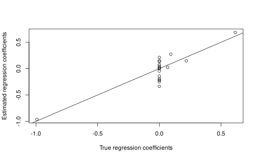

unisimrel.RdFunctions for data simulation from a random regression model with one response variable where the data properties can be controlled by a few input parameters. The data simulation is based on the concept of relevant latent components and relevant predictors, and was developed for the purpose of testing methods for variable selection for prediction.
unisimrel(n, p, q, relpos, gamma, R2, ntest = NULL, muY = NULL, muX = NULL, lambda.min = .Machine$double.eps, sim = NULL)
| n | The number of (training) samples to generate. |
|---|---|
| p | The total number of predictor variables to generate. |
| q | The number of relevant predictor variables (as a subset of \(p\)). |
| relpos | A vector indicating the position (between 1 and \(p\)) of the \(m\) relevant components, e.g. \(c(1,2)\) means that the first two latent components should be relevant. The length of relpos must be equal to \(m\). |
| gamma | A number defining the speed of decline in eigenvalues (variances) of the latent components. The eigenvalues are assumed to decline according to an exponential model. The first eigenvalue is set equal to 1. |
| R2 | The theoretical R-squared according to the true linear model. A number between 0 and 1. |
| ntest | The number of test samples to be generated (optional). |
| muY | The true mean of the response variable (optional). Default is muY=NULL. |
| muX | The |
| lambda.min | Lower bound of the eigenvalues. Defaults to .Machine$double.eps. |
| sim | A fitted simrel object. If this is given, the same regression coefficients will be used to simulate a new data set of requested size. Default is NULL, for which new regression coefficients are sampled. |
A simrel object with list of following items,
The call to simrel.
The (n x p) simulated predictor matrix.
The n-vector of simulated response values.
The vector of true regression coefficients.
The true intercept. This is zero if muY=NULL and muX=NULL
The true mean of the response variable.
The p-vector of true means of the predictor variables.
The index of the true relevant predictors, that is the x-variables with non-zero true regression coefficients.
The (ntest x p) matrix of optional test samples.
The ntest-vector of responses of the optional test samples.
The number of simulated samples.
The number of predictor variables.
The number of relevant components.
The number of relevant predictors.
The decline parameter in the exponential model for the true eigenvalues.
The true eigenvalues of the covariance matrix of the p predictor variables.
The true R-squared value of the linear model.
The positions of the relevant components.
The minimum achievable prediction error. Also the variance of the noise term in the linear model.
The sampled correlations between the principal components and the response.
The true covariance matrix of \((y,z_1, z_2, ..., z_p)^t\).
The random rotation matrix which is used to achieve the predictor variables as rotations of the latent components. Equals the transposed of the eigenvector-matrix of the covariance matrix of \((x_1,...,x_p)^t\).
The type of response generated, either "univariate" as returned from simrel, or "bivariate" as returned from simrel2.
The data are simulated according to a multivariate normal model for the vector \((y, z_1, z_2, z_3, ..., z_p)^t\) where \(y\) is the response variable and \(z = (z_1,..., z_p)^t\) is the vector of latent (principal) components. The ordered principal components are uncorrelated variables with declining variances (eigenvalues) defined for component \(j\) as \(e^{-\gamma * j}/e^{-\gamma}\). Hence, the variance (eigenvalue) of the first principal component is equal to 1, and a large value of \(\gamma\) gives a rapid decline in the variances. The variance of the response variable is by default fixed equal to 1.
Some of the principal components (ordered by their decreasing variances) are
assumed to be relevant for the prediction of the response. The indices of
the positions of the relevant components are set by the relpos
argument. The joint degree of relevance for the relevant components is
determined by the population R-squared defined by R2.
In order to obtain predictor variables \(x = (x_1, x_2, ..., x_p)^t\) for
\(y\), a random rotation of the principal components is performed. Hence,
\(x = R^t*z\) for some random rotation matrix \(R\). For values of
\(q\) satisfying \(m <= q <p\) only a subspace of dimension \(q\)
containing the \(m\) relevant component(s) is rotated. This facilitates
the possibility to generate \(q\) relevant predictor variables
(\(x\)'s). The indices of the relevant predictors is randomly selected
with the only restriction that the index set contains the indices in
relpos. The final index set of the relevant predictors is saved in
the output argument relpred. If q=p all \(p\) predictor
variables are relevant for the prediction of \(y\).
For further details on the simulation approach, please see S<e6>b<f8>, Alm<f8>y and Helland (2015).
Helland, I. S. and Alm<f8>y, T., 1994, Comparison of prediction methods when only a few components are relevant, J. Amer. Statist. Ass., 89(426), 583 -- 591.
S<e6>b<f8>, S., Alm<f8>y, T. and Helland, I. S., 2015, simrel - A versatile tool for linear model data simulation based on the concept of a relevant subspace and relevant predictors, Chemometr. Intell. Lab.(in press),doi:10.1016/j.chemolab.2015.05.012.
#Linear model data, large n, small p mydata <- unisimrel(n = 250, p = 20, q = 5, relpos = c(2, 4), gamma = 0.25, R2 = 0.75) #Estimating model parameters using ordinary least squares lmfit <- lm(mydata$Y ~ mydata$X) summary(lmfit)#> #> Call: #> lm(formula = mydata$Y ~ mydata$X) #> #> Residuals: #> Min 1Q Median 3Q Max #> -1.62684 -0.35767 -0.00802 0.33473 1.25956 #> #> Coefficients: #> Estimate Std. Error t value Pr(>|t|) #> (Intercept) 0.00476 0.03240 0.147 0.8833 #> mydata$X1 0.09126 0.16116 0.566 0.5718 #> mydata$X2 0.45086 0.19305 2.335 0.0204 * #> mydata$X3 0.04386 0.17777 0.247 0.8053 #> mydata$X4 -0.42002 0.18063 -2.325 0.0209 * #> mydata$X5 0.15347 0.13498 1.137 0.2567 #> mydata$X6 0.25080 0.18895 1.327 0.1857 #> mydata$X7 -0.23551 0.16081 -1.465 0.1444 #> mydata$X8 0.17445 0.17408 1.002 0.3173 #> mydata$X9 0.46731 0.18515 2.524 0.0123 * #> mydata$X10 0.11543 0.14090 0.819 0.4135 #> mydata$X11 0.21042 0.15451 1.362 0.1746 #> mydata$X12 -0.22634 0.17227 -1.314 0.1902 #> mydata$X13 0.11775 0.10733 1.097 0.2738 #> mydata$X14 -0.83811 0.16346 -5.127 6.25e-07 *** #> mydata$X15 0.14108 0.23098 0.611 0.5420 #> mydata$X16 -0.07438 0.18528 -0.401 0.6884 #> mydata$X17 -0.04361 0.17769 -0.245 0.8063 #> mydata$X18 0.13967 0.16723 0.835 0.4045 #> mydata$X19 0.30389 0.15632 1.944 0.0531 . #> mydata$X20 0.05618 0.18065 0.311 0.7561 #> --- #> Signif. codes: 0 ‘***’ 0.001 ‘**’ 0.01 ‘*’ 0.05 ‘.’ 0.1 ‘ ’ 1 #> #> Residual standard error: 0.5008 on 229 degrees of freedom #> Multiple R-squared: 0.7357, Adjusted R-squared: 0.7126 #> F-statistic: 31.88 on 20 and 229 DF, p-value: < 2.2e-16 #>#Comparing true with estimated regression coefficients plot(mydata$beta, lmfit$coef[-1], xlab = "True regression coefficients", ylab = "Estimated regression coefficients")#Linear model data, small n, large p mydata <- unisimrel(n = 50, p = 200, q = 25, relpos = c(2, 4), gamma = 0.25, R2 = 0.8 ) #Simulating more samples with identical distribution as previous simulation mydata2 <- unisimrel(n = 2500, sim = mydata)#> Warning: All parameters are collected from the supplied 'sim' object.# NOT RUN { #Estimating model parameters using partial least squares regression with #cross-validation to determine the number of relevant components. require(pls) plsfit <- plsr(mydata$Y ~ mydata$X, 15, validation = "CV") #Validation plot and finding the number of relevant components. plot(0:15, c(plsfit$validation$PRESS0, plsfit$validation$PRESS), type = "b", xlab = "Components", ylab = "PRESS") mincomp <- which(plsfit$validation$PRESS == min(plsfit$validation$PRESS)) #Comparing true with estimated regression coefficients plot(mydata$beta, plsfit$coef[, 1, mincomp], xlab = "True regression coefficients", ylab = "Estimated regression coefficients") abline(0, 1) # }